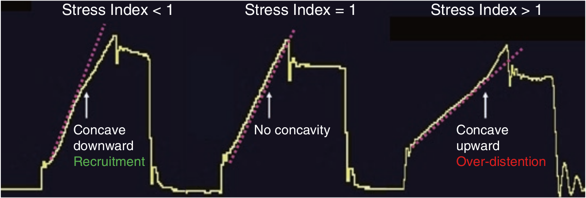

تشخیص تغییرات کمپلیان حاصل از تغییات شیب منحنی فشار - زمان که در مبحث قبل آمد، را می توان بصورت یک مدل ریاضی ساده (منظور یک فرمول ریاضی است) مشخص نمود. این مدل ریاضی بدین صورت است:
PAW = k × tb
در این فرمول PAW فشار راه هوائی t زمان، k ضریب ثابت، و b پارامتری است که نشان دهنده شدت و جهت انحنای منحنی فشار - زمان می باشد. اگر b = 1 باشد، در این صورت منحنی فشار یک خط مشتقیم خواهد بود. یعنی مقدار کمپلیانس در طول دم تغییر نمی کند. اگر b < 1 باشد، با گذشت زمان در طول دم بتدریج فشار کاهش می یابد و تحدب منحنی فشار بسوی بالا (تقعر آن بسمت پائین) است. یعنی مقدار کمپلیانس در طول دم افزایش می یابد که نشان دهنده بازگشائی ریه در طول دم است. اگر b > 1 باشد، با گذشت زمان در طول دم بتدریج فشار بیشتر از قبل افزایش می یابد و تحدب منحنی فشار بسوی پائین (تقعر آن بسمت بالا) است. یعنی مقدار کمپلیانس در طول دم کاهش می یابد که نشان دهنده اتساع مفرط ریه در طول دم است. پارامتر b را اندکس استرس نامیده اند و بعضی ونتیلاتورها این پارامتر را بصورت خودکار محاسبه میکنند.

اندکس استرس در کنترل حجمی:
۱ - اگر کمتر از یک بود، حجم جاری را باید زیاد کرد
۲ - اگر کمتر از یک بود، PEEP را باید زیاد کرد
۳ - اگر بیشتر از یک بود، حجم جاری را باید کم کرد
۴ - اگر بیشتر از یک بود، PEEP را باید کم کرد
۵ - تمام موارد فوق